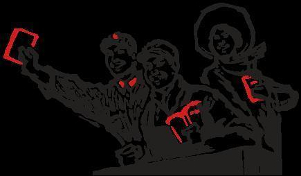
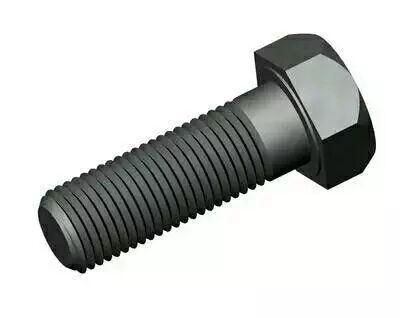
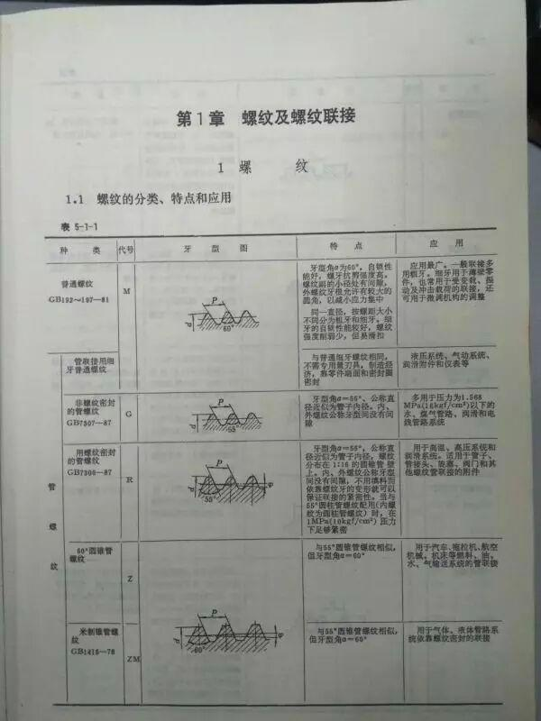

那些看起来很初级原理却很厉害的技术
快，关注这个公众号，一起涨姿势～

鞭响
公园里有大爷耍长鞭总是能发出噼啪的巨响，有人可能以为是皮鞭各部分互相撞击或击打到地面的声音。但事实真的是这样吗？
但这种现象其实是音爆，皮鞭的尖端速度已经超越了音速，是不是很屌。（音爆：当物体接近音速时，会有一股强大的阻力，使物体产生强烈的振荡，速度衰减。这一现象被俗称为音障(Sound Barrier)。突破音障时，由于物体本身对空气的压缩无法迅速传播，逐渐在物体的迎风面积累而终形成激波面，在激波面上声学能量高度集中。这些能量传到人们耳朵里时，会让人感受到短暂而极其强烈的爆炸声，称为音爆(Sonic Boom)。）
可想而知这玩意威力有多大，所以同学们在家耍鞭时还是要注意安全啊！


Word
你在 word 里面打一行字，然后它出现。如果是在中间插入的话，把后面的内容挤下去。
这个非常自然的操作背后是数十位顶尖工程师（将近一半是数学家）的杰作。
你在 word 里面打一行字，然后它出现。如果是在中间插入的话，把后面的内容挤下去。
这个非常自然的操作背后是数十位顶尖工程师（将近一半是数学家）的杰作。
因为这个排版要做到：
可以处理所有已知的人类语言，以及它们的任意组合。
可以处理绝大多数已知的人类排版规则（比如某些标点之间不能断开），以及它们的任意组合。
可以处理图片、表格、公式、各种嵌入的组件，以及它们的任意组合。
可以处理「反常」、「损坏」的输入，不能疯掉。
然后呢，因为是实时编辑的所以：
所以排版必须快，编辑不能卡（TeX 不是实时的）。
要支持撤销重做剪切粘贴等你们看上去稀松平常的功能（每一个都不好做）。
而且 Word 是带界面的！这个界面不能太复杂，否则没人会用你家软件。也就是说，所有这些复杂的功能都必须藏起来，然后以最自然的方式提供。
哦对了：这个是通用的排版库，所以要可以用在多个软件里面，要有通用性。还要能跨平台。
即便是没学过编程的同学也应该能知道这有多难了吧。
螺母

螺母只要是相同规格，强度又一样，不管他是你手工打造的，还是工厂生产的，不管是中国制造的，还是德国制造的。只要规格一样，他们就能通用。还能保持一样的紧固性能。
这难道不神奇么？
要知道，造出来一个螺栓和造出来一批螺栓，让不同人的人造出来的螺栓通用，让世界各地的人造出来的螺栓通用。这件事情，太简单，却又太不简单了！
有些不学机械的同学不明白，套用一句哲学一点的话来说，世界上没有哪两个螺栓是一模一样的。即便是同一批原材料，同一台加工设备，同一名工人，它们也不会一样。这需要一个世界统一的规格和要求去规范它。
说起来，很容易。但螺栓这个小小的东西，涉及到了
金属冶炼，机械加工，热处理，材料力学，理论力学，疲劳理论等等等等，你说它是近代机械工业的基础之一，恐怕也不为过。
如果认真一点，去翻一下《机械设计手册》你会发现，紧固件在其中占据了多么大的篇幅。

烧砖
不知道你见过烧砖木有，至少是见过板砖的吧。但你们有没有想过板砖是怎么从烂泥巴一团摇身一变成了可以拍人的板砖一块。
烧砖，烧陶瓷，看似简单，技术早有了，几千年过去了。
涉及的理论有晶体生长，相变理论等等。
谈到晶体生长，那么最重要的因素就是温度。烧制过程中温度设置、升温速度、温度梯度、保温时间都是非常重要滴，组分也很重要，组分直接影响材料性能，此外，还有掺杂。。。。
关于晶体生长的热点 。超硬晶体、压电晶体、半导体晶体、光功能晶体、磁性单晶薄膜都是热点方向，举几个知道的例子，比如C纳米管、单晶硅、碳化硅、砷化镓、超导块材等等热门材料的制备，水热法制备晶体的理论目前少有数据支撑，只有唯象解释。
晶体生长和相变理论依然是现代物理学，材料科学的研究热点和难点。
骚年，烧砖里面还有很多学问等着你去学啊！！！！

这些技术恰恰印证了一句话——你必须非常努力才能看起来毫不费力。在工业设计上，往往越是简单的设计，实现起来的难度越大。而且不只是工业设计，做其他事情也是一样，想要看起来毫不费力就必须非常努力。
喜欢就赶紧关注吧！！！

图文来源：Sir.Terry，吴刚 ，霍开拓等知乎大大
编辑：信息部 康宁